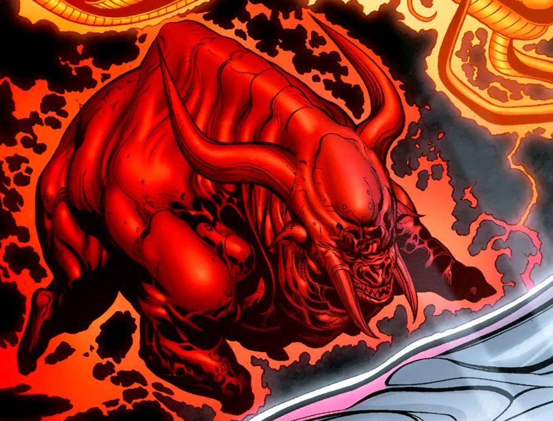
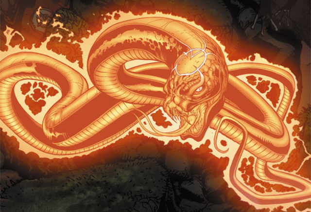
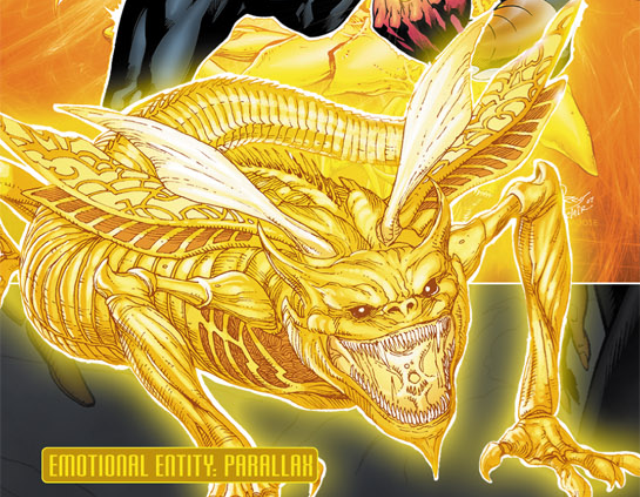
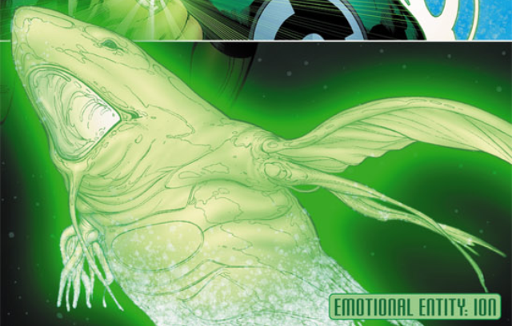
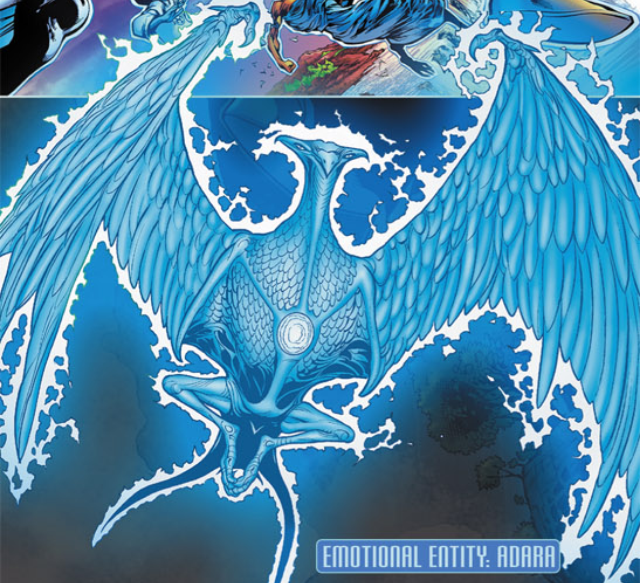
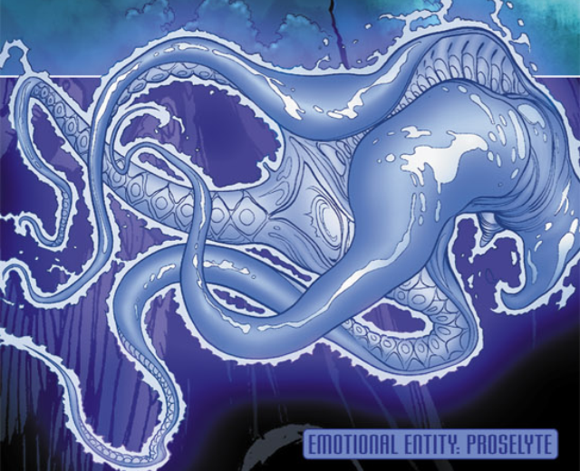
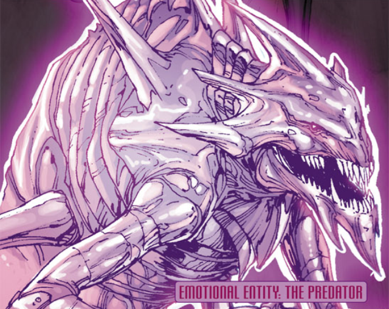

Lanterns
Within the DC Universe, there are numerous Lanterns that spawn from a different color. Each color is associated with an emotion and each Lantern Corp draws their power from harnessing this emotion. There are also two different colors that do not draw power from emotion: white which gives and provides life; and black which gains powers from all death. These Lantern corps were fleshed out beautifully by writer Geoff Johns and are now the best that DC has to offer from their cosmic stories. Instead of describing series alone, I will give a short overview of almost each corps on this page.
{kind=link}
Red Lantern Corps
The Red Lantern Corps draw their power from hatred and rage. Their leader Attrocitus was able to be the first to harness the power of the this color while on a journey to find a way to avenge the deaths of his space sector 666 from the massacre of the Manhunters after a malfunction in their programming. Attrocitus was once a more innocent soul, but after experiencing the loss at the hands of the Manhunters, he has nothing but hate in his heart now. The red lantern ring replaces a being's blood with the power of the red light so that they may expel blood as an acidic weapon that can burn through the structures of many other Lantern Corps. The entity of this Lantern Corps is named The Butcher.
The Butcher
{kind=link}
Orange Lanterns
The Orange Lanterns are a strange one to describe. Mostly because there is really only one live member. The orange light allows the user to harness power from avarice. It also makes the wielder of this power greedy and hungry beyond anything ever seen. Therefore, when the user sees something they like, the orange light gives them power to be able to obtain it. Once their desire is obtained, they will again hunger, lust, or desire something else. The orange lantern can also trap the souls of its victims and summon them during battle to act as its own corp. The sole wielder of this power goes b by the name of Agent Orange who was given his own sector by the Guardians of the Universe, but when Green Lanterns and Sinestro Corps begin to trespass, Agent Orange decides to go back out and punish the Green Lanterns for trying to soil what is his. The entity for this color is Ophidian.
Ophidian
{kind=link}
Sinestro Corps
After losing his status as a Green Lantern, Sinestro chose to seek out a way to form his own corp. Realizing that Green Lanterns could not affect anything yellow, he chose to dig deeper into that and discovered that Parallax had been imprisoned within the Green Lantern Battery. What Sinestro also did was travel to the anti-matter universe to force its inhabitants to forge him a ring that would allow him to harness the power of the yellow light that Parallax provides. Sinestro and his Corps are then locked in constant battle with the Green Lanterns until the end of the War of Light, where the Blackest Night begins. This corp draws their power from fear and their entity is Parallax.
Parallax
{kind=link}
Green Lantern Corps
The Green Lantern Corps are the oldest lanterns in DCU continuity. They have an extensive history that spans all the way to the last century when DC Comics was just starting to flesh out their universe. The Green Lanterns are the corps that are right in the middle of the spectrum of light, and as such have the most control over their power. Unlike other corps, where the light can take control of the user, a Green Lantern is only as strong as their willpower is. While this may be detrimental in some cases, it comes to be useful for what the Guardians of the Universe set out to do: to create a police force for the universe that they may have some control over. The greatest of the Green Lanterns is Kyly Rayner who gave new life to the Green Lantern Corps after they were wiped out by a Hal Jordan who was under the influence of Parallax; Kyle was also able to grow to master the entire spectrum. Once rebuilt, the Green Lantern Corps shined brighter than ever. Their entity is named Ion.
Ion
{kind=link}
Blue Lantern Corps
The Blue Lanterns were formed by two Guardians of the Universe that were cast out of the Green Lanterns because they felt love for each other and expressed great hope for a better future for the universe. Guardians are not allowed to feel emotion, this is why they were cast out. One the planet of Odym, these Guardians (Sayd and Ganthet) were able to harness the power of their hope to forge the first Blue Lantern ring. Eventually, they built up a central battery similar to the Green Lantern's and began recruiting. Members of the Blue Lanterns are selected based on their ability to express hope even in the darkest of circumstances. Such as Saint Walker, who lost his family while trying to reach the top of a mountain that could save his planet from a red giant sun. He stayed hopeful and discovered what the teachings of the prophet actually was: to spread hope. Eventually, a Blue Lantern ring his way to Walker and he was able to make the sun young again and save his planet. Members of this corps, therefore, usually have strong ties to religious and spiritual belief. The entity for the Blue Lanterns is Adara.
Adara
{kind=link}
Indigo Tribe
The most mysterious of all the Lanterns are the Indigo Tribe. They journey across the universe spreading their power of compassion onto every being they possibily can. The leader, Indigo-1, was once a friend of Abin-Sur, the Green Lantern who discovered the prophecy of the Blackest Night. The Indigo Tribe was created to aid the other Lanterns in the fight against Nekron when the Blackest Night finally arrived. Their staffs and indigo light allow them to understand other beings through compassion and they can harness the power of other Lanterns. Their entity is named Proselyte.
Proselyte
{kind=link}
Star Sapphires
Along with Sinestro, the Star Sapphires are the oldest foes to the Green Lanterns. The Star Sapphires draw their power from love and are led by the Zamarons (cosmic Amazonians). Whenever they sense that a being capable of great love is in danger of losing their ability to feel love, a ring is sent to them. The Zamarons seek to do the same thing that the Guardians of the Universe did: to create a corp that would police the universe. The Star Sapphires are not tasked with preserving life and capturing criminals however, but instead they are tasked with preserving love in the universe. The Zamarons believe that if everyone feels love, their will be no cause for violence anymore, but they are blind to the fact that they cannot accomplish this goal because they fail to see that life itself is more valuable than love. Their entity is The Predator
The Predator
{kind=link}